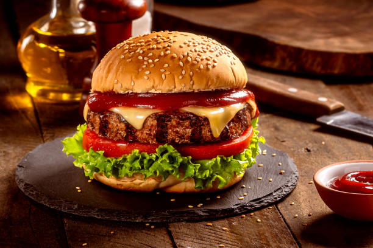

Burger

Description
A burger is a popular fast-food dish made with a juicy, seasoned beef patty placed inside a soft
bun. It is topped with fresh vegetables, cheese, and delicious sauces to create a tasty and
satisfying meal.
Ingredients
- 1 burger bun
- 1 beef patty
- 1 slice of cheese
- 2 lettuce leaves
Steps
- Prepare the patty: Season the beef patty with salt and black pepper.
- Cook the patty: Heat oil in a pan and cook the patty until fully cooked.
- Toast the bun: Cut the burger bun into two halves and lightly toast them.
- Add sauces: Spread mayonnaise and ketchup on the inside of both bun halves.
Back